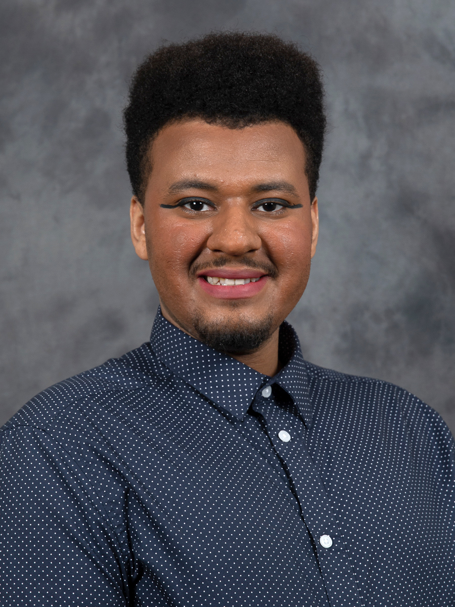

Hiya! My name is Alberto Williams(They/them). I am an aspiring software engineer student at DePaul University! I am majoring in computer science to do software engineering.
Born in ‘96, the age of technology began to take root. My first exposure and enjoyment of technology were video games. I loved playing video games such as Super Mario 64, The Legend of Zelda Ocarina of Time, and various Pokémon titles. These games sparked both my love for technology, curiosity for software, and imagination. In 2007, my father finally got our home a desktop computer. Born and raised in an impoverished environment, my family was not able to afford the most up-to-date computer, so just having a computer at home was a huge blessing. Through the home computer was how I learned of the many websites widely used today such as Facebook and Google, as well as relics of that time such as MySpace. As I grew up with these websites, I witnessed the evolution of their user-interfaces and user-experiences, going from basic HTML and CSS to more sophisticated software development technologies. I would consider myself a “kid raised by technology”, and it was this technological nurture which birthed a desire to assume a career in computers; specifically, in software engineering.